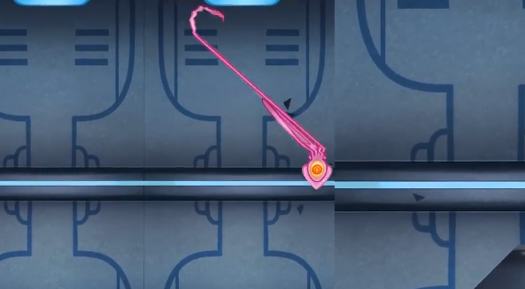
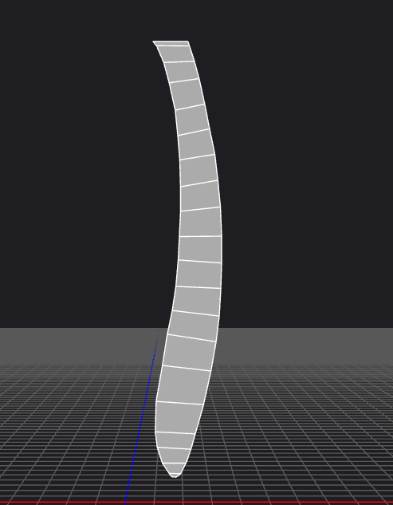
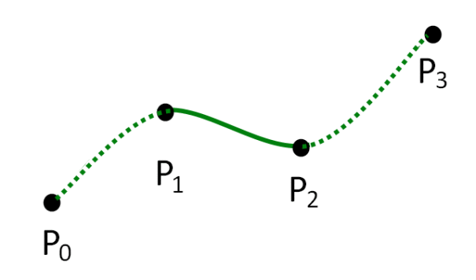
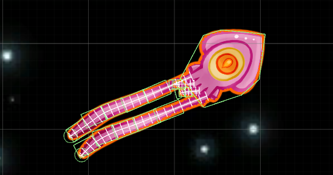
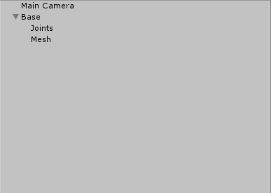
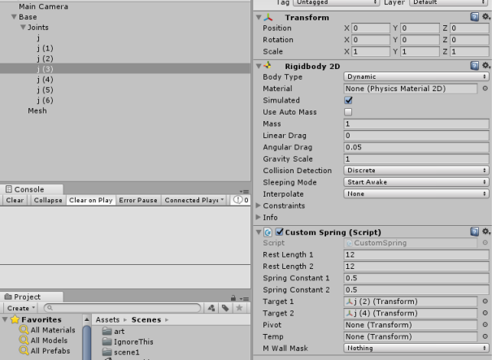

For the past year, I’ve been working on a game known as Dawn of the Celestialpod. The game itself uses physics as the basis for movement, more specifically, tentacles. The player can swing the left and right tentacles around grabbing onto things and pulling themselves towards them making for a very enjoyable mechanic for movement. Getting these tentacles to be buttery smooth and nice wasn’t easy as it took multiple iterations.
The first iteration of the tentacles was without art. A chain of capsules was created and rigged. This was the first tentacle. They were all chained together using distance joints. They seemed to work perfectly fine and I didn’t have to change any of the joint parameters at runtime. I was eventually given art and I thought the transition from the capsule to the newly rigged tentacles would be smooth sailing. I was very wrong.
Above is a picture of the old tentacles after spending hours trying to make it work with the rigged mesh and joints. No matter how I tweaked the parameters, no matter what type of joints I used, the tentacles always ended up being incredibly glitchy and buggy visually. On top of that, the variables could not be tweaked easily to make the tentacles reach farther or move faster without messing everything up. This meant if in the future the designers wanted to change anything, I would have to sit with them and mess with pretty much every number on every joint until it was working. This would not work at all.
After researching a bunch and speaking to my professors, I finally had a solution. I would skin the tentacles on my own without using Unity’s built in components. The only thing I would need is rigidbodies. The first step to all of this is creating a bidirectional spring joint since the tentacles could be pulled away from the player and they can be pulled towards the player. This was very simple to do using Hooke’s Law which is F = kx where k is the spring constant and x is the extension of the spring. In code, it is just as simple.
Create a script and add the following inside fixed update:
//Get forces for both directions and add them
Vector3 force1 = GetAttractForce(target1, springConstant1, restLength1);
Vector3 force2 = GetAttractForce(target2, springConstant2, restLength2);
Vector3 force = force1 + force2;
GetComponent().AddForce(force * Time.fixedDeltaTime);
Take note, target1 and target2 are the Transforms of the previous and next joint. We add the resulting spring forces together to get the actual spring force and then apply that to the current rigidbody.
The GetAttractForce will look like this:
private Vector3 GetAttractForce(Transform toBeTested, float constant,
float length)
{
//is transform valid
if (!toBeTested)
return Vector3.zero;
Vector3 d = transform.position - toBeTested.position;
Vector3 force = -constant * (d.magnitude - length) * d.normalized;
return force;
}
The spring constant is a variable that can be changed at runtime where as the length is calculated when the joints are in their correct starting positions.
if(target1)
restLength1 = Vector2.Distance(transform.position, target1.position);
if (target2)
restLength2 = Vector2.Distance(transform.position, target2.position);
It’s that easy! I would recommend making getters and setters for the spring constant as you may want to change it at runtime.
Now that the springs are all setup, it’s time to skin the mesh using said springs. The mesh itself should be set up a very specific way.
Notice how the faces are split up into sections. In Unity, each of these faces will be two triangles whose vertices will be easy to move around. Also, the number of vertices in the mesh should be even! But how do we decide how to move these vertices based on the joints? The Answer: create a Catmull Rom Spline from the joint positions and sample from that spline. A Catmull Rom Spline is a very easy to implement spline which is guaranteed to pass through the points it is generated from.
It creates a smooth line between two points with respect to the points after and before these two points. Samples along that spline will be the new vertex positions. Sounds easy, but there is a lot of setup to do before any of this works properly.
First, create a custom mesh skinning script. There will be many things that need to be tracked. This first is all of the joints belonging to this tentacle. Assuming that each joint is in the correct position, you can call the calculate distance function on each joint as explained earlier so they all know their original resting length. The mesh I showed you earlier may not have all the vertices organized perfectly. Triangles and faces may be completely out of order. To counteract this, I sort them so the sampling will work 100 percent of the time.
First, sort them by their y positions.
public static void BubbleSort(ref List elements)
{
bool flag = true;
Vector3 temp;
int numLength = elements.Count;
//Sort vertices by y position
for (int i = 1; (i <= (numLength - 1)) && flag; i++)
{
flag = false;
for (int j = 0; j < (numLength - 1); j++)
{
if (elements[j + 1].y > elements[j].y)
{
temp = elements[j];
elements[j] = elements[j + 1];
elements[j + 1] = temp;
flag = true;
}
}
}
}
I used a simple bubble sort implementation as there wouldn’t be many elements and this would only be called once when the tentacles are initialized. However, this isn’t enough. How do you know which vertex is left/right and which order to draw the triangles in? Simply iterate through each taking note of which vertex will be drawn first in the pair. Sorted positions is a list created earlier and has been passed into bubble sort already.
for (int i = 0; i < mSortedPositions.Count; i+=2)
{
if (mSortedPositions[i].x > mSortedPositions[i + 1].x)
{
mFirsts.Add(1);
mFirsts.Add(0);
}
else
{
mFirsts.Add(0);
mFirsts.Add(1);
}
for (int j = 0; j < tentacleMesh.vertices.Length; j++)
{
if(tentacleMesh.vertices[j] == mSortedPositions[i])
{
mOriginalPositions.Add(j);
}
}
for (int j = 0; j < tentacleMesh.vertices.Length; j++)
{
if (tentacleMesh.vertices[j] == mSortedPositions[i + 1])
{
mOriginalPositions.Add(j);
}
}
mLengths.Add(Vector3.Distance(mSortedPositions[i],
mSortedPositions[i + 1]) / 2);
if (mLengths[mLengths.Count - 1] > mMaxLength)
mMaxLength = mLengths[mLengths.Count - 1];
mLengths.Add(Vector3.Distance(mSortedPositions[i],
mSortedPositions[i + 1]) / 2);
if (mLengths[mLengths.Count - 1] > mMaxLength)
mMaxLength = mLengths[mLengths.Count - 1];
}
List actuals = new List();
for (int j = 0; j < mOriginalPositions.Count; j++)
{
int index = 0;
foreach (int i in mOriginalPositions)
{
if (j == i)
{
actuals.Add(index);
break;
}
index++;
}
}
mOriginalPositions = actuals;
There are a few things that I have added in this function for ease. First, I create an array that will take in the old index vertex and spit out a newly indexed vertex. Next, I calculate the lengths between the vertex pairs as we will eventually need to push them apart when moving them using the spline. Both of these are stored in lists.
From here, everything is set. We can go one of two ways with this, loop through each vertex and move their position on the CPU, or let the GPU do it since it is already working with vertices anyways. Let’s skip the easy way and implement the incredibly optimized way since several nested for loops is something we don’t want in an Update call. Since we are using a shader, below the setup, we need to pass the known variables and lists to the shader. This is incredibly easy.
GetComponent().material.SetInt("_NumJoints", mNumJoints);
List jointPositions = new List();
foreach (Transform joint in mJoints)
{
jointPositions.Add(joint.position);
}
GetComponent().material.SetVectorArray("_JointPositions",
jointPositions.ToArray());
GetComponent().material.SetFloatArray("_OriginalPositions",
mOriginalPositions.ToArray());
GetComponent().material.SetFloatArray("_Lengths", mLengths.ToArray());
GetComponent().material.SetFloatArray("_Firsts", mFirsts.ToArray());
GetComponent().material.SetInt("_NumSamples", mSortedPositions.Count);
GetComponent().material.SetInt("_SamplesPer",
(mSortedPositions.Count / 2) / mNumJoints);
I will explain all of these variables as we make the shader to skin the tentacle. Start by creating a Unity Unlit Shader. There are a few tags that should be added before you get started. In the subshader add:
Cull Off
This will prevent triangles drawn in the wrong order from rendering backwards. Next, in the main pass add:
#pragma target 3.5
#include "UnityCG.cginc"
We need to use at least HLSL 3.5 to access vertex ID’s inside the shader UnityCG allows for using the base semantic structs. Add the following parameter to your vertex shader function:
uint id: SV_VertexID
Vertex ID will be set to the vertex ID from Unity(it’s index in the array of vertices). You can now add all of the positions that were originally passed in:
float4 _JointPositions[20];
float4 _PositionOffset;
float4 _LockPos;
float4 _CurrentDir;
int _NumJoints;
int _NumSamples;
Int _SamplesPer;
float _Lengths[200];
float _Firsts[200];
float _OriginalPositions[200];
Notice how I have upper bounded the arrays at 200 as I do not expect to have a mesh with more than 200 vertices. You can change this if your tentacles have a higher count. Don’t worry, we won’t be looping through these huge arrays.
The first thing we need is a function to sample from a Catmull Rom Spline. I will save you the hassle and provide a simple function to do so. Above the vertex shader function, add this:
float4 GetCatmullRomPosition(float t, float4 p0, float4 p1,
float4 p2, float4 p3)
{
float4 a = 2.0f * p1;
float4 b = p2 - p0;
float4 c = 2.0f * p0 - 5.0f * p1 + 4.0f * p2 - p3;
float4 d = -p0 + 3.0f * p1 - 3.0f * p2 + p3;
float4 pos = 0.5f * (a + (b * t) + (c * t * t) + (d * t * t * t));
return pos;
}
To find out how to actually get these parameters, we have a separate function:
float4 GetCatmullSample(int knownIndex, float timeSample,
float4 positions[20], int jointNum)
{
float4 p0, p1, p2, p3;
//Sample based on index in joints
if (knownIndex == jointNum - 1)
{
p0 = positions[knownIndex - 1];
p1 = positions[knownIndex];
p2 = positions[knownIndex];
p3 = positions[knownIndex];
}
else if (knownIndex == jointNum - 2)
{
p0 = positions[knownIndex - 1];
p1 = positions[knownIndex];
p2 = positions[knownIndex + 1];
p3 = positions[knownIndex + 1];
}
else
{
if (knownIndex == 0)
p0 = positions[knownIndex];
else
p0 = positions[knownIndex - 1];
p1 = positions[knownIndex];
p2 = positions[knownIndex + 1];
p3 = positions[knownIndex + 2];
}
return GetCatmullRomPosition(timeSample, p0, p1,
p2, p3);
}
This function takes in the known joint index and time sample which are both calculated before this is called. This will handle any issues with sampling. For example, if this is the first/last joint, the p0 or p3 will have to be something else(perhaps p1 or p2). The function itself just returns the sample between the different joints.
Finally, we need to take all the data we have and sample based on the vertex ID. I’m going to create one more function to handle the rest. This function will have a lot of parameters as they are all passed from the vertex shader.
float4 calculatePositions(uint knownIndex, float4 positions[20],
float firsts[200], float lengths[200], float originalPositions[200],
uint jointNum, int samples, const uint SamplesPerJoint)
{
int keyIndex = (uint)originalPositions[knownIndex];
}
The first thing I do is find out what the index is based on the ordered indices. This can be done with the array that was passed to us from the CPU. Next, we need to sample twice based on this index to find out the direction of the line between the two samples(which will be used later). First, we need to find the joint indices. This is simple as we know the current index and the number of samples per joint.
uint jointIndex = (uint)(keyIndex / (uint)2 / SamplesPerJoint);
uint jointIndex2 = (uint)((keyIndex + 1) / (uint)2 / SamplesPerJoint);
Now, we need to figure out what delta sample along the spline to use based on the vertex. To do so, take the remainder of the previous calculations and floor them.
float tRemainder = (float)keyIndex / (uint)2 / SamplesPerSpring;
float tRemainder2 = (float)(keyIndex + 1) / (uint)2 / SamplesPerSpring;
tRemainder -= floor(tRemainder);
tRemainder2 -= floor(tRemainder2);
Floating point errors can be deadly, add these few lines of code just incase.
if (tRemainder >= .99)
{
tRemainder = 0;
}
if (tRemainder2 >= .99)
{
tRemainder2 = 0;
}
We have everything we need now! We can sample along the spline using the helper functions created earlier.
//Sample with the joint positions
float4 sampledLoc = GetCatmullSample(jointIndex,
tRemainder, positions, jointNum);
float4 sampledLoc2 = GetCatmullSample(jointIndex2,
tRemainder2, positions, jointNum);
Now we have the correctly sampled position along the spline. This is not where the vertex should go as the tentacle would just be a line. Note that we have saved the array of firsts and lengths from earlier. To move the vertex to the actual correct position, we need to find the direction perpendicular to the direction between these two points.
float4 dir = normalize(sampledLoc2 - sampledLoc);
float4 perpendicularDir = float4(dir.y, -dir.x, dir.z, dir.w);
Next, based on whether it was the left or right vertex, push it based on the distance saved for this specific vertex in the correct direction and return the result.
if (firsts[keyIndex] == 0)
{
return (sampledLoc + (perpendicularDir * lengths[keyIndex]));
}
else
{
return (sampledLoc + (-perpendicularDir * lengths[keyIndex]));
}
That’s it for this function. Just one more thing to do and this shader is all set. In the vertex shader, create a position and store the result of this function in it. Take that result and transform it to clip space and you are done!
float4 pos = calculatePositions(id, _JointPositions, _Firsts, _Lengths,
_OriginalPositions, _NumJoints, _NumSamples, _SamplesPer);
v.vertex = UnityObjectToClipPos(pos);
Now, we just a couple of things to do in the mesh skinner update function before we head over to the editor. First, we need to move the mesh so that it is in the Camera’s viewing frustum so it doesn’t get culled.
transform.localPosition = Camera.main.transform.position;
Next, convert the joints to vector4’s, then pass them to the shader.
List jointPositions = new List();
foreach (Transform joint in mJoints)
{
jointPositions.Add(joint.position);
}
GetComponent().material.SetVectorArray("_JointPositions",
jointPositions.ToArray());
If the mesh doesn’t always follow the camera, I recommend increasing the bounds so it is never culled using the following:
GetComponent().mesh.bounds = new Bounds(Vector3.zero,
new Vector3(float.MaxValue, float.MaxValue));

The white line through each tentacle is the Catmull Rom Spline. The white lines segmenting it are the samples and the end of each line is where the vertex is being moved.
Now to set everything up in editor! Start with a Tentacle base. On it, add a joints and mesh object as children to it.
Next, add an amount of joints where the number of vertices divided by 2 is divisible by the number of added joints. Otherwise, the setup process wouldn’t work at all. Each joint should have a custom spring and a rigidbody. Setup the prev and next targets of each spring so they reference the prev and current. For example, j3 would have a target1 of j2 and a target2 of j4. Set the spring constants and lengths as you wish.
Finally, add a mesh renderer and mesh filter to the mesh object. Create a material and assign the tentacle skinning shader to it. Attach this material to the mesh renderer. Add the tentacle skinning script, give it the necessary references and you are done!
If you have any questions please don’t hesitate to ask!
Thanks for reading! Connect with us on Twitter, Facebook, or YouTube. To make sure you stay up to date, sign up for our email list!